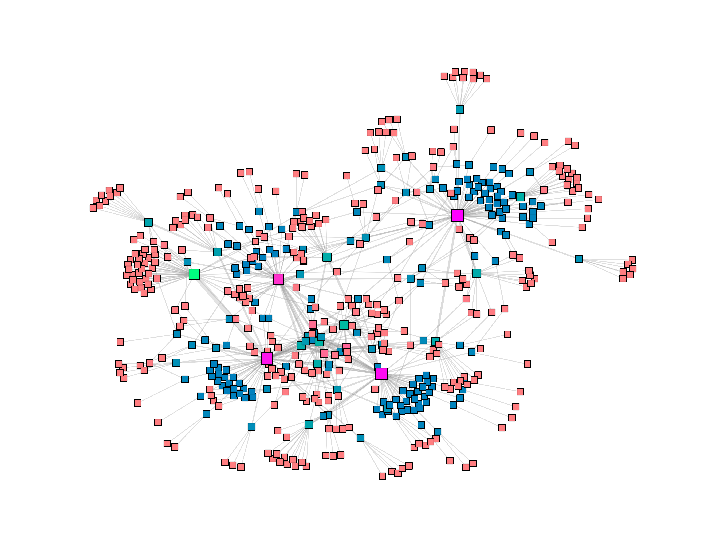
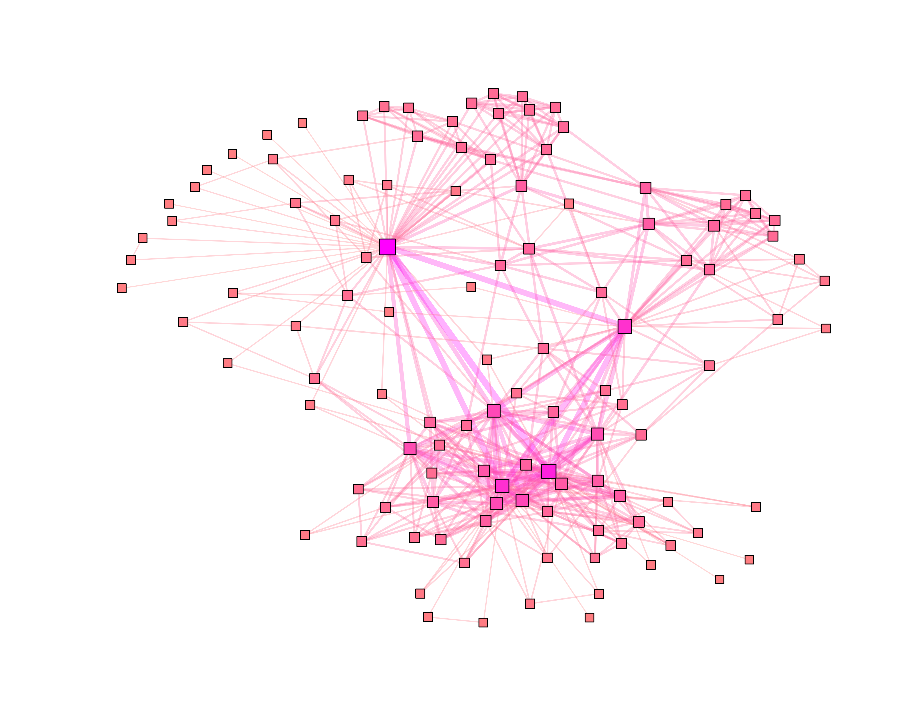
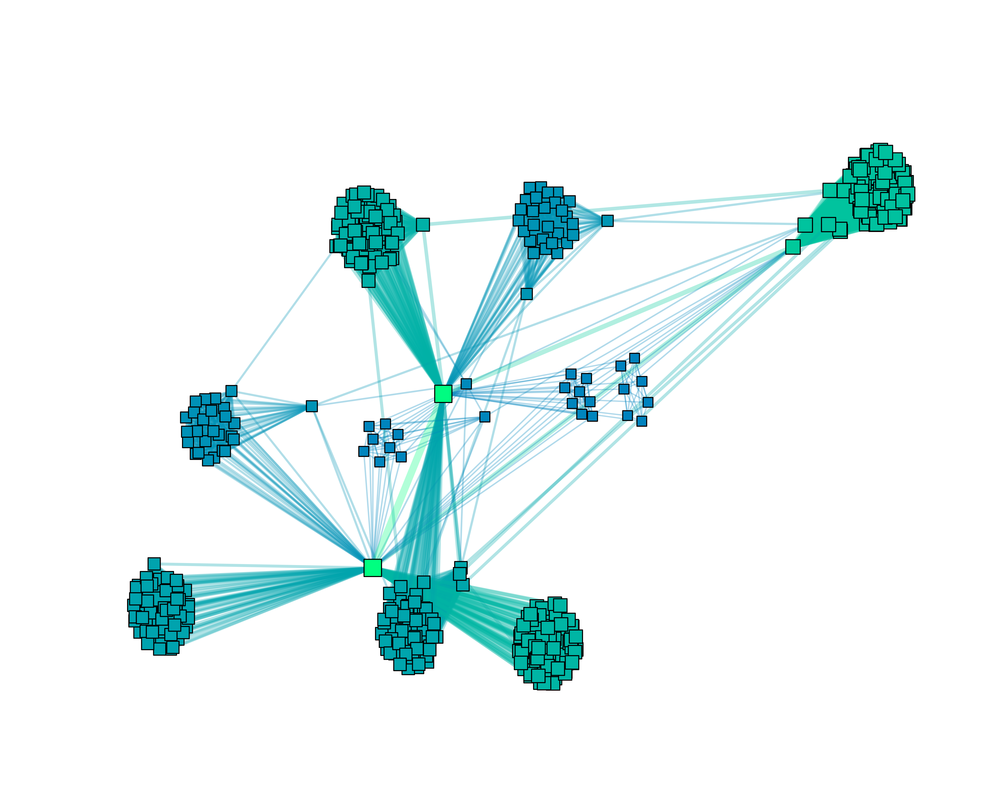
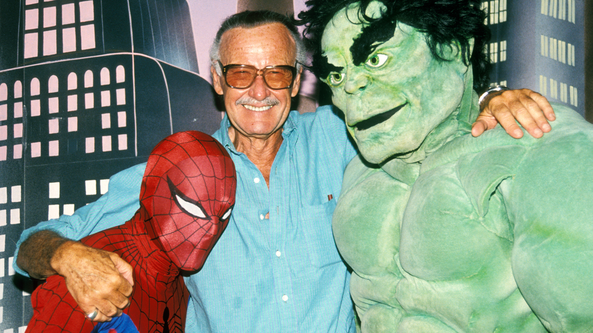
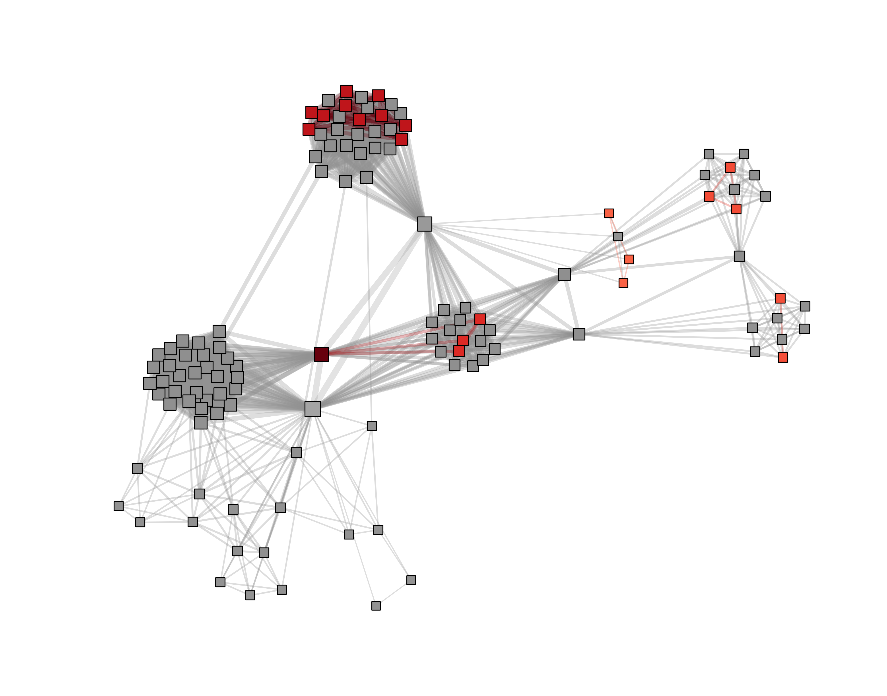
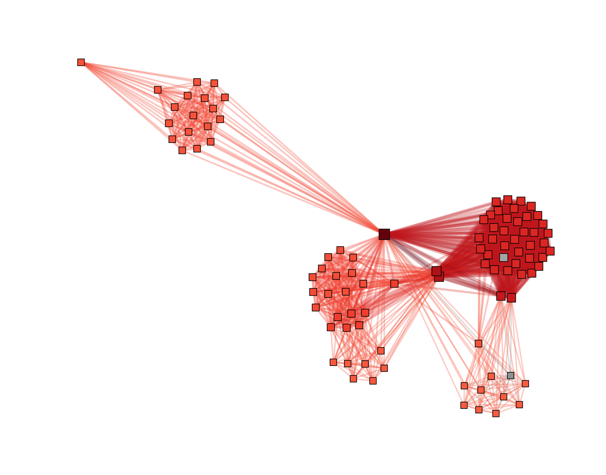
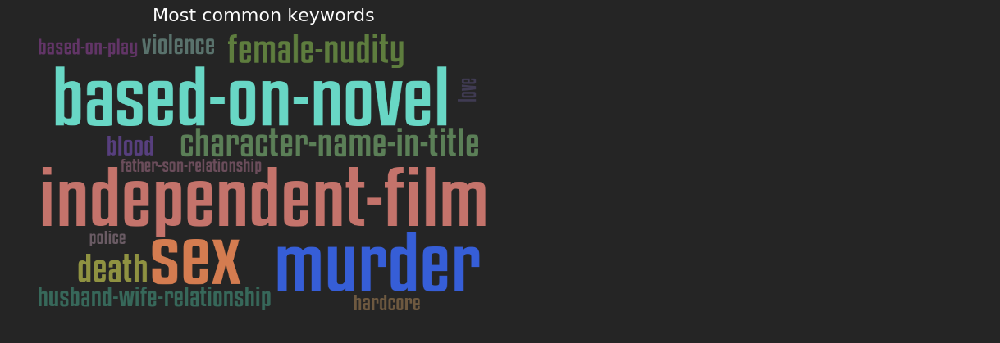
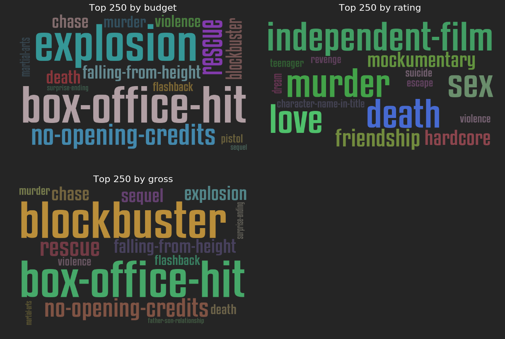

Goal
Explore IMDB dataset and user reviews to look behind the scenes of cinematography.
Dataset
IMDB
To help serve users who want local access to their data, the IMDB offers their data set as plain text files that can be downloaded for free. The IMDb data comes as plain data files having .list extension. The files have been downloaded from http://www.imdb.com/interfaces using an FTP client, and include compressed archives created by assembling collections of plain text files of .list format. The fetched data includes 52 archives and 4 folders. The size is estimated by 12.63GB. The files downloaded have a format that is not easily readable by most computational tools learned in the course, therefore the data preparation played a major role in this project, and required a lot of effort. Since files from ftp://ftp.fu-berlin.de/pub/misc/movies/database/ contain somewhat different numbers of columns and rows, and furthermore include different headers, the files had to be translated into a SQL database using a third-party service http://imdbpy.sourceforge.net. But because SQL do not offers infrastructure required to easily access various attributes (and many other downsides, see Explainer Notebook), we have built an infrastructure to transfer the most important data to a NoSQL database. Properties of the resulting database are listed below.
User reviews
For text analysis we used the Large Movie Review Dataset v1.0 fetched from http://ai.stanford.edu/~amaas/data/sentiment/. The core dataset contains 50,000 labeled, as well as unlabeled documents for unsupervised learning. In the entire collection, no more than 30 reviews are allowed for any given movie because reviews for the same movie tend to have correlated ratings. We used unlabeled data, as we are not interested in already provided sentiments, but want to calculate sentiments on ourselves. User reviews are keyed by IMDB ids rather than primary keys in the SQL database, hence we need to map each IMDB id to the corresponding primary key to be able to compare sentiments with other attributes like gross, release year, and more. As there is no information on IMDB ids in the database itself, we parsed OMDB website to find those.
OMDB
The OMDb API is a free web service to obtain movie information. We have obtained 60,000 JSON documents from https://www.omdbapi.com. Each JSON document contains following fields.
| Website | Fields |
|---|---|
| IMDB | Year, Rated, Released, Runtime, Genre, Director, Writer, Actors, Plot, Language, Country, Awards, Poster, imdbRating, imdbVotes, imdbID, Type, DVD, BoxOffice, Production, Website |
| Rotten Tomatoes | tomatoMeter, tomatoReviews, tomatoFresh, tomatoRotten, tomatoConsensus, tomatoUserMeter, tomatoUserRating, tomatoUserReviews, tomatoURL |
Summary
The final collections stored in MongoDB are listed below.
| Collections | Count | Size (MB) | Storage (MB) |
|---|---|---|---|
names_map |
2,851,082 | 172 | 80 |
prod_countries |
951,419 | 44 | 18 |
release_years |
933,715 | 46 | 14 |
titles_map |
933,715 | 59 | 28 |
genres |
886,236 | 46 | 22 |
directors |
853,946 | 39 | 19 |
languages |
848,085 | 39 | 13 |
cast |
725,011 | 81 | 62 |
prod_companies |
634,875 | 30 | 14 |
runtimes |
613,963 | 30 | 14 |
votes |
280,444 | 12 | 6 |
imdb_ratings |
280,444 | 13 | 6 |
birth_years |
278,288 | 12 | 6 |
keywords |
267,438 | 138 | 129 |
birth_places |
250,989 | 11 | 4 |
prod_companies_map |
222,116 | 14 | 7 |
plots |
218,348 | 148 | 109 |
heights |
149,667 | 7 | 2 |
keywords_map |
147,421 | 9 | 5 |
budgets |
101,221 | 4 | 2 |
omdb_files |
64,176 | 57 | 25 |
gross |
15,568 | 0 | 0 |
user_reviews |
7,091 | 64 | 45 |
birth_places_map |
385 | 0 | 0 |
languages_map |
342 | 0 | 0 |
prod_countries_map |
241 | 0 | 0 |
genres_map |
28 | 0 | 0 |
Hint: Many collections having string values are encoded with integers to save some space, so we introduce collections ending by "_map" to get the initial strings values. Don't be scared if you see something like that, it's actually pretty awesome!
Using filtering and intelligent mapping we were able to shrink the total size of IMDB data from 12GB to 1GB. You can download the complete MongoDB database by clicking ZIP button above.
Network analysis
Network representation
The collaboration graph of movies and actors is called co-stardom network. Bipartite graph Bip=(M,A,E) will have two node sets M - movies, A - actors and edges in E that only connect nodes from opposite sets. M is connected to A if A has played in M. Hence there are no direct M - M or A - A links.
The following properties refer to bipartite network of science fiction movies only.
| Nodes | Links | Components | Largest component | Clustering coef. | Probability |
|---|---|---|---|---|---|
| 227,155 | 273,936 | 6,594 | 186,639 | 0.0 | 0.000011 |
| Min degree | Max degree | Median degree | Mean degree |
|---|---|---|---|
| 1 | 448 | 1 | 2.4 |
| 0 | 448 | 0 | 1.2 |
| 0 | 48 | 1 | 1.2 |
The sample of this network is shown as graph below.

Hint: curious about graph design? Check out the code of NetworkHelper.draw_graph_attr
Movie-to-movie network
Bipartite network projection is an extensively used method for compressing information about bipartite networks (read here). For the convenience of directly showing the relation structure among a particular set of nodes, bipartite networks are usually compressed by one-mode projection. This means that the ensuing network contains nodes of only either of the two sets, and two M (or, alternatively, A) nodes are connected only if when they have at least one common neighboring A (or, alternatively, M) node.
The first projection is network of movies connected if they have an actor in common. Parameters are shown in the following table.
| Nodes | Links | Clustering coef. | Probability |
|---|---|---|---|
| 13,989 | 127,209 | 0.36 | 0.0013 |
| Min degree | Max degree | Median degree | Mean degree |
|---|---|---|---|
| 1 | 343 | 6 | 18.18 |
The sample of this network is shown as graph below.

Actor-to-actor network
The second projection is network of actors connected if they played in the same movie. Parameters are shown in the following table.
| Nodes | Links | Clustering coef. | Probability |
|---|---|---|---|
| 172,650 | 5,111,268 | 0.91 | 0.00034 |
| Min degree | Max degree | Median degree | Mean degree |
|---|---|---|---|
| 1 | 3052 | 36 | 59.21 |
The sample of this network is shown as graph below.

Statistics
The main discoveries in this part of solution refer entirely to the science fiction genre. The statistics are based on data provided by IMDB. For details see the particular section in Explainer Notebook.
172,650 actors played in 13,989 movies.
The biggest cast has movie Angry Video Game Nerd: The Movie (2014) with 448 actors. Here, IMDB lists all the normally uncredited extras in the cast.

Actor Kōichi Yamadera (1961) played in 48 science fiction films.
An actor acts in only 1.2 movies on average, and vice versa.
82% of movies and actors are connected, meaning if you get friends with an well-known actor, through a chain of actor-to-actor relationships you may become friends with 82% of all actors on the planet.
Probability that a particular actor plays in a particular movie is 0.0014%
Probability that an actor plays in two random movies is 0.13%
Probability that a movie hires two random actors is 0.034%
An actor knows 59 actors on average.
Stan Lee (1922) knows 3,052 actors in total.

A movie is connected through an actor to 18 movies on average.
Two random actors (or movies) are reached in a maximum of 14 steps.
Degrees of co-stardom network follow the power law distribution, meaning the most common number of movies an actor plays is 1, while the most common number of actors a movie hires is 2
Friendship paradox is true: the most actors know fewer actors than those know on average.
Centrality
In graph theory and network analysis, indicators of centrality identify the most important vertices within a graph
We are going to explore the most central nodes according to a few different centrality definitions.
Betweenness and closeness centrality
Betweenness centrality quantifies the number of times a node acts as a bridge along the shortest path between two other nodes. Closeness centrality measures the mean distance from a node to other nodes.
If you want to get friends with the most actors on Earth, first become friends with the cast of Iron Man Three (2013), Transformers: Dark of the Moon (2011), or Captain America: Civil War (2016) as they are the most central hubs in the co-stardom network of science fiction movies.


Degree centrality
Degree centrality is the most basic method of defining centrality, basing the centrality only on the number of neighbours a node has.
Actors who played in Kaze no tani no Naushika (1984) played also in 343 different movies, which is a record.
Eigenvector centrality
The eigenvector centrality thesis reads: A node is important if it is linked to by other important nodes.
Actors who played in Kidô senshi Gandamu (1981) played also in very connected movies like Kaze no tani no Naushika (1984)
Attributes
Now we move on to observe different attributes (those of movies as well as those of actors). This step of analysis helps us to uncover the real structure of the network and how it has grown. We will check the assortativity of nodes in respect to attributes, but also answer whether attributes build good communities across the network.
The science fiction genre has experienced the main gain in popularity in the beginning of 2000th, when the technology for movie production evolutionized, and it goes through the peak right now.
The most common runtimes are around 10-30 min and 80-120 min.
The most movies are low-budget movies. The more budget the movie has, the more money it spends on cast and crew, and the more profitable actors it hires, which also play in many other pictures.
There more a movie invests, the more it becomes in return.
The most actors of sci-fi films were born from 1950 to 1980. Actors who were born in later years are younger and therefore less wanted as more experienced actors. We also see a trend that the science fiction becomes more and more popular and many new actors join this trend.
Height attribute, in contrast, follows the normal (Gaussian) distribution, and isn't correlated with any other attribute.
Assortativity
Assortative mixing is a preference for a network's nodes to attach to others that are similar in some way. The more is the coefficient of assortativity towards an attribute, the more the nodes prefer to attach to other nodes having a similar attribute value.
By knowing assortativity we can closely approximate the behavior of the network.
Assortativity towards movie attributes
| Assortativity | Attribute | Coefficient |
|---|---|---|
| Numeric | Release year | 0.81 |
| Attribute | Language | 0.67 |
| Attribute | Production country | 0.66 |
| Numeric | Degree | 0.33 |
| Numeric | Budget | 0.28 |
| Numeric | Runtime | 0.22 |
| Numeric | Votes | 0.20 |
| Numeric | Gross | 0.12 |
| Attribute | Production company | 0.06 |
| Attribute | Director | 0.04 |
Actors tend to play in movies which are released within a couple of years.
Actors act preferentially in movies where the same language is spoken.
Actors tend to act in movies produced in the same country.
The most profitable actors act in the most expensive movies. But before they got very popular, they act in low-budget movies first.
Actors tend to act both in short and long movies.
Actors show no preference towards some particular production company or director.
Assortativity towards actor attributes
| Assortativity | Attribute | Coefficient |
|---|---|---|
| Numeric | Birth year | 0.74 |
| Attribute | Birth place | 0.40 |
| Numeric | Degree | 0.33 |
| Numeric | Height | 0.02 |
Actors of similar age tend to play in movies. This seems to be well reasoned: there are movies where teens play the central role, movies with young adults, and finally adults.
Actors who were born in same country tend to act together.
Well-known actors tend to act with other well-known actors.
Height has no impact on decisions of companies to hire somebody or not.
Communities
Networks with high modularity have dense connections between the nodes within modules but sparse connections between nodes in different modules.
Next we will see whether attributes are good communities, and will uncover some new.
Modularity of movie attributes
| Attribute | Communities | Modularity |
|---|---|---|
| Production country | 70 | 0.34 |
| Release year | 10 (rescaled) | 0.25 |
| Language | 54 | 0.23 |
| Budget | 10 (rescaled) | 0.10 |
| Runtime | 7 (rescaled) | 0.09 |
| Production company | 6,265 | 0.06 |
| Director | 10,409 | 0.04 |
| Gross | 8 (rescaled) | 0.02 |
| Votes | 9 (rescaled) | 0.02 |
Hint: Numeric attributes like release year may have a very wide scale of values, which makes performance ugly. We discovered a correlation between maximal value on the scale and the performance: if some values go above ~1000, the algorithm hangs, hence some attributes have been rescaled to [1,10]. The modularity hasn't suffered.
Production countries, release years, and languages are not good communities, that is for example, movies made within USA are interconnected only moderately, while they share many connections with movies made outside of USA. Film industry is an international industry.
Modularity of actor attributes
| Attribute | Communities | Modularity |
|---|---|---|
| Birth place | 205 | 0.24 |
| Birth year | 10 (rescaled) | 0.18 |
| Height | 5 (rescaled) | 0.01 |
None of the actor-related attributes build good communities, in particular, for attribute birth place it means that actors act with international actors very commonly, while for attribute birth year it means that teens commonly play with adults, and vice versa.
Next we will illustrate the modularity of the attribute birth place by drawing Danish actors and their co-actors.

We see that only a few Danes acted with other Danes together. Hence, birth places fail to represent communities in actor-to-actor network.
Modularity of best partition
This is the partition of highest modularity, i.e. the highest partition of the dendrogram generated by the Louvain algorithm.
| Network | Communities | Modularity |
|---|---|---|
| Movies projection | 83 | 0.60 |
| Actor projection | 163 | 0.84 |
The communities detected by an algorithm are much better than those of attributes.
Let us get a feel of newly calculated modularity by drawing a random graph.

Each coloured node (and edge) belong to community 0, and their colour depends upon degree. All grey-coloured nodes (and edges) belong to other communities. We can discover the almost perfect partition. We recognize it by the cardinality of links within nodes of the same community (strong boundaries of coloured sections) being higher than the cardinality of links to other communities.
Text analysis
Now we are going to dig a little deeper into contents of movies to answer whether there is a correlation between keywords provided by IMDB and plots, and whether actors tend to act in movies of the same contents.
Keywords
First of all we will discover keywords provided by IMDB.
Most common

The most common term is independent-film, a feature film that is produced mostly or completely outside of the major film studio system.
Films based on a novel enjoy the popularity.
By genre
More general terms murder, female-nudity, sex and death describe what the most films are about: murders and sex.
Keywords provided by IMDB highly correlate with contents of entire genres. The most common words of science fiction are alien, outer-space, monster, and robot. Horror films can be mainly described by terms murder, death, and blood. Terms murder and police are on the top of crime genre. The term murder is also very frequent in dramas. War films commonly show WWII and nazis.
Top 250 movies

The most profitable movies are biased towards particular terms.
Explosion is one of the most frequent words for the most expensive movies. The more a production company has money, the more it invests in special effects, and the more explosions it shows. Across top 250 films by gross the most promising are blockbusters. Box-office-hit keyword (describing a highly-grossing picture) is also the most common in top 250 films by budget. All those keywords are less common for movies with the highest IMDB ratings though, where the independent-film and mockumentary (parody) top the list.
The most successful and top-rated films seem to differ a lot, they even mirror opposite trends: almost none of the keyword independent-film are present in the keywords set of the most expensive and profitable movies. On the other side, none of the term box-office-hit are in top-rated films. The same observation we do wenn we look at word love. Quite a lot of top-rated movies are about love, but only a bunch of most successful films are (which are mainly blockbusters with breathtaking explosions), that is, the top-rated films interact with feelings of watchers and trigger sympathy.
Similarity
The most movies - 73% - aren't similar regarding keywords, meaning that keywords are maybe to concrete for a similarity measure. But, having seen those keywords anywhere, you will be able to identify the movie right away.
| Assortativity | Attribute | Coefficient |
|---|---|---|
| Numeric | Average similarity | 0.50 |
The actors tend to play in movies described by similar keywords (moderately though).
There is no single attribute correlated with similarity. Willing to act in movies of similar content depends on a dicision of an actor rather than on a movie. This decision isn't depending upon year, nor it is depending upon gross, budget and other measures: it is an output of complex psychology of an actor.